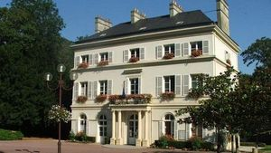
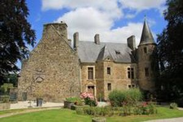
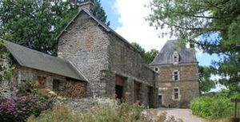
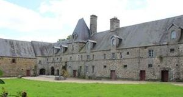

Recensement Jean-Claude Truffet




| Département | 50 — Manche |
| Canton | Saint-Lô |
| Commune | Agneaux |
| Type d'édifice | Château |
| Période d'origine | XIII-XV-XIX |
| Coordonnées GPS | 49° 07' 15,08" Nord, 1° 07' 12,79" Ouest |
Deux châteaux dans cet article Agneaux et la Palière. AGNEAUX, en 1428, Richard d'Esquay, fils de Reignier d'Esquay, est seigneur d'Agneaux et de Caenchy. À sa mort, en 14601, il laisse quatre filles, dont la seconde, Girette d'Esquay, épouse de Raoul de Sainte-Marie. Ce dernier mourut en 1496, laissant un fils, Jean de Sainte-Marie, époux de la sur de Bertin de Silly, chambellan de Louis XI. De cette union naquit un autre Jean de Sainte-Marie, gouverneur de Saint-Lô jusqu'en 1563. Son frère aîné, Nicolas de Sainte-Marie, chevalier de l'ordre du Roi, gentilhomme de sa chambre, capitaine des châteaux de Valognes et de Granville, est quant à lui seigneur d'Agneaux et mourut en 1591. Parmi ses enfants, ce fut Jacques de Sainte-Marie, gouverneur de Granville et des îles Chausey, chevalier de Saint-Michel, gentilhomme de la Chambre des rois Henri IV et Louis XIII, qui reçut le fief d'Agneaux. Avec son épouse, Catherine de Harlus, il eut un fils Jacques II de Sainte-Marie qui mourut en 1641. Son fils aîné, Jacques III de Sainte-Marie lui succède et meurt à Granville en 1664, dont il était le gouverneur. Lui succède, son fils François-Louis de Sainte-Marie, issu d'un premier mariage avec Madelaine Boutin, qui mourut jeune, tout comme son premier fils Nicolas-Thomas de Sainte-Marie, le second leur succéda. On trouve ensuite, Jean-Jacques-René de Sainte-Marie, qui était page du roi en 1720 et, qui, en 1728, à la mort de son père, hérite des titres de seigneur d'Agneaux et marquis de Sainte-Marie. Il avait épousé Catherine Jacquier de Viels-Maisons. Jean-Jacques-René de Sainte-Marie, deuxième du nom, fils du précédent et de Catherine, ancien capitaine au régiment d'Orléans, chevalier de Saint-Louis, seigneur d'Agneaux, épouse, en 1774, Louise-Françoise Pestalozzi, et mourut en 1787, laissant plusieurs enfants.
AGNEAUX , le premier propriétaire de ce château, qui nous soit bien connu, est Herbert dAgneaux, qui vivait au milieu du XIe siècle, et qui est cité dans la charte de dotation de la cathédrale de Coutances. A été construit au XIIIe siècle et désigné depuis cette époque jusquen 1790, sous le nom de Cour ou manoir dAgneaux. Assis sur un rocher escarpé à 60 pieds au-dessus de la rivière, il était imprenable de ce côté et la disposition du terrain devait rendre presque inutile une tour avancée, dont on voit encore les ruines dans les broussailles, au bord de la vallée. De lautre côté, il était défendu par des murs, un pont-levis, des tours et autres ouvrages ordinaires, qui existaient entiers en 1770. Ce château qui appartient à M. le marquis Théobald de Sainte-Marie, est dans la position la plus pittoresque avec ses hautes et blanches murailles perchées sur un schiste grisâtre et sa gothique chapelle, à laquelle le lierre a fait une verdoyante ceinture. transformé en hôtel restaurant par Christian Groult.
Éléments protégés MH : la ferme : inscription par arrêté du 2 avril 1946. Les façades et les toitures du château (à l'exclusion de celles de l'aile du XIXe siècle) : inscription par arrêté du 3 mai 1974. La PALIERE, le château fut construit dans les années 1835-1836 par un architecte du nom de Harou Romain pour le comte de Bernardin Gigault de Bellefonds. En effet, c'est en 1910 que Pierre de Gouville, maire d'Agneaux de 1935 à 1971, prend possession du château suite à un héritage. C'est en 1981 que la commune d'Agneaux en fait l'acquisition. L'édifice accueille l'hôtel de ville depuis 1983. Dans le parc un lavoir et des arbres classés par l'office national des forêts.
Agneaux; marquis Théobald de Sainte-Marie La Palière; comte de Bernardin Gigault de Bellefonds
"
Deux châteaux dans cet article Agneaux grav 2-3-4 et la Palière grav 1. Agneaux GPS : 49° 07' 15,08" Nord, 1° 07' 12,79" Ouest